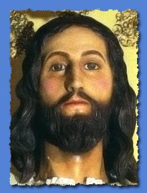
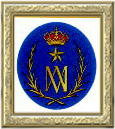
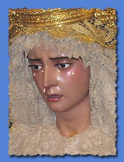
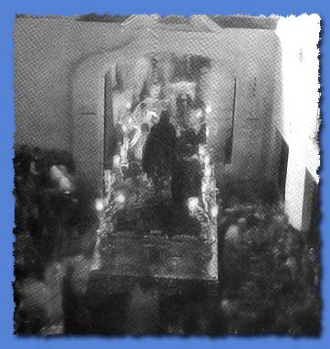
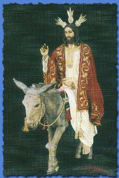
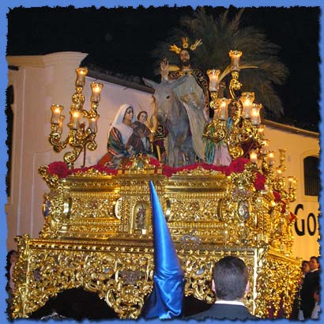
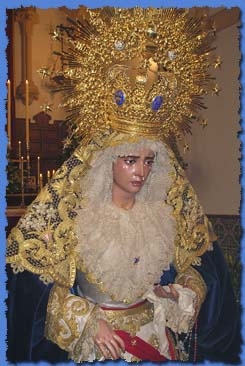
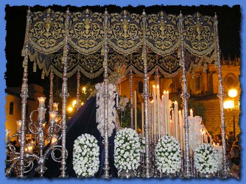

|
 |
 |
 |
| Ilustre y Lasaliana Hermandad y Cofradía de Cristo Rey en su Entrada Triunfal en Jerusalén, Nuestra Señora de la Estrella y San Juan Bautista de la Salle | ||
| Pasos | Templo | Barrio |
| Dos | Capilla del Colegio San José | Centro |
| Historia | |
| La procesión de la Borriquita es relativamente reciente en la Semana Santa de Jerez. El inicio de la fundación de esta hermandad data del año 1949 cuando el 27 de Julio del mismo año el Cardenal Segura decreta la constitución de una comisión gestora en el colegio de La Salle que se encargaría de fundar una Hermandad de Penitencia que diese culto al misterio de la Entrada Triunfal de Cristo en Jerusalén. esta gestora redactó unos estatutos que fueron aprobados formalmente el 19 de febrero de 1952, fundándose acto seguido la Hermandad el 25 de Agosto del mismo año. La imagen titular de Cristo Rey fue aportada por el imaginero Tomas Chaveli Gisbert, hijo del afamado escultor Ramón Chaveli y miembro de la junta directiva de esta Hermandad siendo bendecida la misma el 19 de Marzo de 1950 y haciendo su primera salida procesional el Domingo de Ramos de 1951. Al año siguiente se completaría el misterio con la mayor parte de las imágenes que lo componen a día de hoy. Dado que esta Hermandad se fundó en el seno de un colegio, desde el principio contó con un gran número de hermanos y de nazarenos. Tradicinalmente estos nazarenos han portado palmas en lugar de cirios en el caso del paso de misterio, a diferencia del Palio cuyo cortejo ha portado desde siempre cirios al modo tradicional. Son miembtros destacados de la fundación de esta Hermandad el Hermano Tomás, director por aquel entonces del colegio de La Salle y Tomás Chaveli Gisbert. |
 En esta instantánea histórica podemos apreciar una recogida del misterio de la borriquita en 1957. Los elementos que componían este paso son en su mayoría los que podemos apreciar en la actualidad. |
| Paso de Misterio e Imagen del Señor | |
| La Imagen de Cristo Rey es una talla de Tomas Chaveli Gisbert, hijo del imaginero Ramón Chaveli Carreres, imaginero valenciano que adquirió gran renombre en Jerez. Esta imagen está realizada en madera policromada y cuenta con la peculiaridad de poseer dos juegos de piernas intercambiables que permiten a la imagen tanto estar sentado sobre la pollina como estar de pie. La pollina y su cría son también obra de Tomás Chaveli. El conjunto del Señor y las pollinas fueron aportadas de forma gratuita y desinteresada por el imaginero ya que éste fue uno de los hermanos fundadores de esta corporación nazarena. Estamos ante la obra cumbre y más importante de este imaginero para la ciudad pues de hecho, es la única que ha perdurado en la actualidad de entre todas las que aportó a la imaginería procesional de Jerez de la Frontera. En 1982 José Guerra Carretero realizó una restauración de la imagen. La vestimenta del Señor son una túnica de Lyon color hueso y un manto de terciopelo rojo, ambas bordadas en oro por Maria Josefa Rodríguez en 1967. Las potencias son de plata sobredorada y salieron del taller de orfebrería de Manuel Seco Velasco en 1964. |
 |
|
 |
Inicialmente este misterio procesionaba sobre un paso de madera en su color natural de reducidas dimensiones. Por aquel entonces sólo cuatro figuras componían el misterio: El Señor, una imagen de San Juan, la pollina y su cría. En 1957 se estrenó el paso actual de madera dorada, además de gran parte de las imágenes que componen el misterio a día de hoy. La talla es obra de José Ovando de 1957 y el dorado es de Manuel Daza del año 1960. El paso cuenta en su canastilla con seis capillas que reproducen la portada de la Cartuja de Jerez. En estas capillas se exhiben las imágenes de los Cuatro Evangelistas en las laterales, San Juan Bautista en la trasera y la Inmaculada Concepción en la frontal, todas ellas obra de Tomás Chaveli. Entre las imágenes secundarias nos encontramos con dos niños y la imagen de San Juan Evangelista obra de Sebastián Santos, una mujer obra de Tomás Chaveli y una imagen de Santiago Apóstol obra de Miguel Ángel Segura. |
| Paso de Palio e Imagen de la Virgen | |
| Cuando la Hermandad se planteó incluir una Dolorosa en su procesión allá por el año 1961, una comisión se dirigió a Sevilla para buscarla y la encontraron en el taller de Sebastián Santos, el famoso imaginero onubense. Hacerse con ella fue bastante complicado ya que esta dolorosa era un retrato idealizado de una hija del imaginero que era monja. Finalmente la comisión consiguió hacerse con la dolorosa por 60000 pesetas y la trajeron a Jerez en Marzo de 1962 siendo bendecida por Monseñor Cirarda en mayo del mismo año. Sin embargo no procesionaría hasta el año 1969. Se trata de una dolorosa de candelero realizada en pino de flandes. Viste una saya de tisú de plata bordada en oro por Esperanza Elena Caro en 1973 y un manto azul sin bordar con una toca de sobremanto de malla bordada en oro estrenada en 1997. Es objetivo de esta hermandad ver en un futuro cercano el manto azul completamente bordado. La corona es obra de Manuel Seco Velasco de 1964 y está hecha en plata sobredorada. |
 |
|
 |
El Paso de Palio de esta hermandad tardó 19 años en terminarse. Los respiraderos y varales son orfebrería de los talleres de la Viuda de Villarreal. El palio es de terciopelo azul de Lyon bordado con hilos de oro y plata y apliques de nácar. Las caídas delantera y trasera son obra de Esperanza Elena Caro pero finalizadas por las hermanas Martín Cruz mientras que el techo y las caídas laterales son un diseño de Miguel Pérez Carrillo ejecutado por Encarnación López y Rosario Santano. |